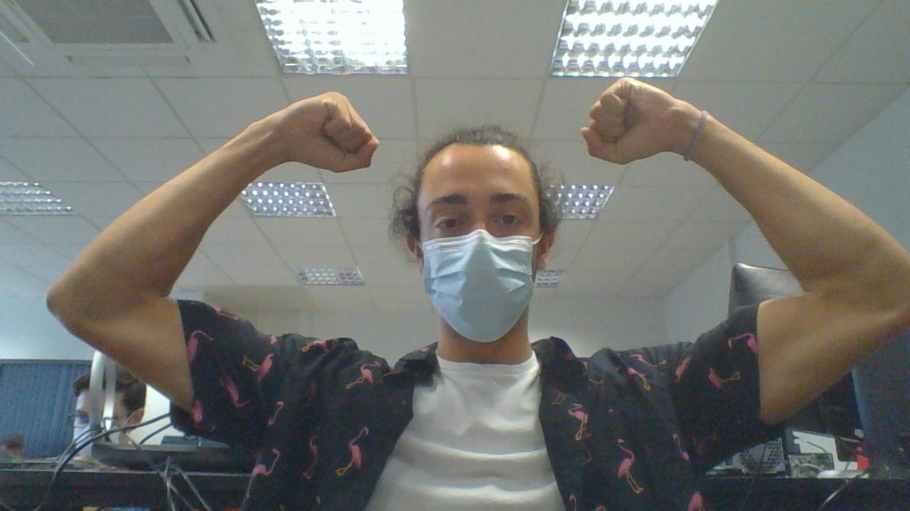

LUCAS LESCOT

- 6 rue Pierre Brossolette
78220 Viroflay
- 07 81 59 57 70
- lucas.lescot@gmail.com
- 21 ans Permis B
INTERETS
- Shaper pour l'atelier
de conception de skates chez
"Skate_Crépuscule"
- Tennis : 10 ans
- Boxe : 5 ans
- Musculation : 4 ans
CDI UX designer
Ma formation
Depuis septembre 2020
Ecole d'ingénieur généraliste (ECE-Paris)
1ère année du cycle ingénieur
Septembre 2018 à juin 2020
Ecole d'ingénieur généraliste (ESEO-Velizy)
Prépa intégrée
2015-2018
Lycée Saint-Thomas de Villeneuve (Chaville)
Baccalauréat Scientifique mention assez bien
Terminale S option STV - spécialité ISN
2011-2015
Collège Saint-Thomas de Villeneuve (Chaville)
Brevet des collèges mention bien
Expérience professionnelle
Juin 2019
CDD à l'OPPBTP - Direction des systèmes d'information
Technicien informatique - Boulogne-Billancourt
- Restauration du par informatique pour revente au personnel
(Lenovo T440s)
- Dépannage utilisateurs
Juin 2016
Stage de deux semaines, fin de seconde, à l'OPPBTP
(Organisme professionnel de prévention du bâtiment et des
travaux publics) à Boulogne-Billancourt au sein de direction
des systèmes d'information et de l'organisation
J'ai abordé avec l'équipe :
- le réseau social d'entreprise Yammer (chartre d'utilisation
et sécurité du réseau);
- le passage de câbles entre étages pour les relier à la salle
du serveur;
- la supervision des équipements du systèmes et des réseaux;
- la vérification de la connectique réseau
- le phishing;
- le Firewall.
Compétences
Langues
- Anglais-Niveau B2
- Espagnol-Niveau B1
- Italien-Niveau A2
Informatique
- Pack office
- Python, C, C++, Java, Arduino, HTML et CSS
- Photoshop, Figma
{kind=link}